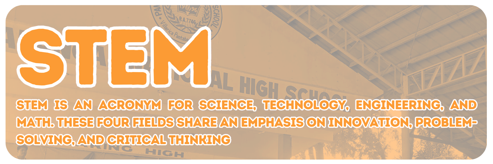
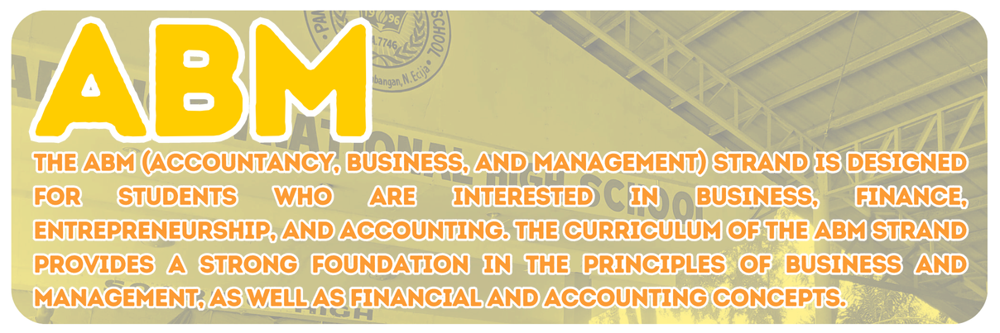
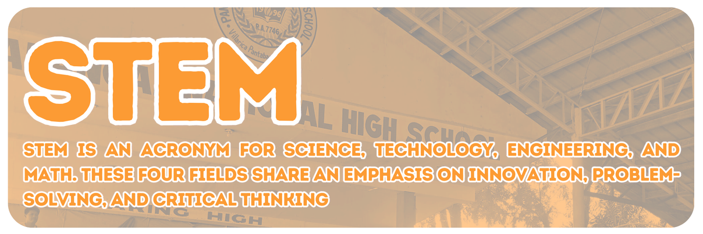
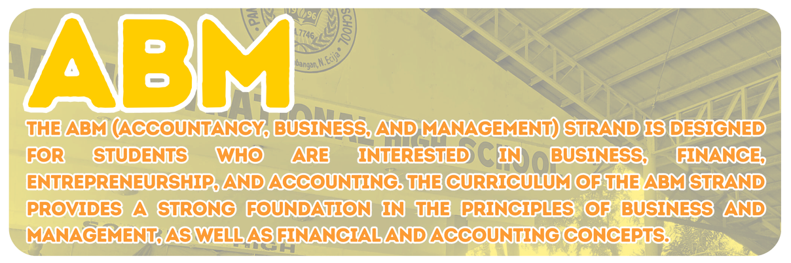

Name: Pantabangan National High School
Location: Villarica, Pantabangan, Nueva Ecija
 




Like other educational institutions, Pantabangan High School has gone through epical struggle before it reaches its present state. There were times that tried its endurance yet it prevailed. Pantabangan High School started as an Annex of Rizal High School in 1992. It was made possible through the concerted action of Barangay Leaders, Municipal Officials and some civic spirited individuals. In its first year of existence, classes were opened with 50 first year students under the guidance of a teacher-adviser who was tasked to teach the eight subjects. Enrollment was doubled in June 1993 and the situation called for the employment of additional teachers.
Ninteen ninety four was a significant year in the education history of Pantabangan Rizal High School Annex was finally transformed into an independent Pantabangan National High School
Since then enrollment has not plummented to less than 400. To cope up with the mounting needs of the
increasing number of students, the Department Of Agriculture (DAR) lent its six (6) idle offices situated
in Brgy. Malbang. They were reconstructed into 6 classrooms provided for the students. The two other
classrooms were located in Brgy. Villarica swhich is now the permanent site of >Pantabangan National High School.
Finally, after several years of optimistic anticipation the students and teachers are now holding classes to a refuge of learning they can confidently call their own.
In the face of these challenges that the modern times bring, Pantabangan National High School continues to perform its mighty task of freeing the young people from the tyranny of ignorance. Its commitment to the youth will be burning ceaselessly in the torch it holds.


Ang pagsusuot ng uniporme ay naayon sa polisiya ng Kagawaran ng Edukasyon na sa katanggap-tanggap sa pagpasok sa paaralan. Subalit upang masiguro ang pagkakakilanlan at ang kaligtasan ng mga ito laban sa mga tagalabas na maaring makapasok at makahalubilo nila sa loob ng paaralan na maaring mag- lagay sa kanila sa alanganin, ineenganyo ang pareparehas na pagsusuot ng uni- porme ang mga mag-aaral kada araw na may pasok. Maari naman naman nilang gamitin ang kanilang pang P.E. uniporme tuwing Miyerkules at sa oras ng kanil- ang klase. Sa araw ng Biyernes ay maaari na silang magsuot ng sibilyang damit maliban sa mga sumusunod; tattered jeans, sleeveless, shorts, croptop, at mini- skirt.
Kailangang ang gupit ng lalaki ay yaong sila ay magmumukhang disenteng es- tudyante na nagpapakita ng pagiging maginoo. Para naman sa mga babae, ay yaong magmumukha rin silang disenteng estudyante na nagpapakita ng pagiging binibini. Pinapayagan ang paglalagay ng kaunting make-up subalit ipinagbabawal ang sobra. Nararapat na walang mga hikaw o "piercings" ang mga lalaki sa oras ng klase at kung sila ay nasa sa loob ng paaralan. Kung maari, ang mga tattoo kung mayroon man ay yaong hindi makatakaw pansin at tila sila ay mga ka- miyembro ng anumang gang o FRATERNITY O SORORITY.
Mahigpit na inaasahan ang araw-araw na pagpasok ng mga bata sa kanilang mga klase upang maipasa nila ang kanilang mga asignatura at masiguro ang kanilang pang-akademikong pag-unlad.
Sakali at lumiban ang mga bata ng higit sa TATLONG ARAW ay nararapat ng magpasa ng EXCUSE LETTER na nilagdaan ng magulang o tagapag-alaga, na nagpapaliwanag ng dahilan ng pagliban upang mabigyan ng mga guro ng mga gawaing hindi nakuha dahil sa pagliban at sa gayon ay may pagkakataon ang mga batang makapagsulit o maka-make up upang pumasa.
Ang pagmamarka sa Junior HS ay kada quarter at sa SHS ay semestral at nararapat na maipasa ng mga bata ang lahat ng asignatura kada quarter/ semester, kaya nararapat na tutukan ng mga magulang o tagapag-alaga ang pag- aaral ng mga bata. Kung kinakailangan, nararapat ang aktibong ugnayan ng paaralan at mga magulang sa anumang paraan para sa pagmonitor ng kanilang pagkamit ng kasanayan.
Iwasan ang pagiging huli (late) sa pagpasok sa klase sapagkat malaki ang magiging epekto sa perpormans at mga marka ng mga bata kung paulit-ulit ang gawaing ito.
Para sa Senior High School na mag-aaral, nararapat na maintindihan na ang batang mayroong dalawang di-naipasang (bagsak) asignatura na hindi nabigyan ng INTERBENSYON O REMEDYAL NA KLASE sa kasalukuyang semestre ay hindi papayagang magpatala ng mga kasunod na asignaturang may prerequisite at uulitin ang mga ito kung mayroong summer at kung ang mga asignaturang di ipinasa ay nakaoffer. Subalit, kapag ang bata ay bumagsak ng higit sa dalawang (2) asignatura sa kabuuan ng dalawang semestre, uulitin na niya lahat ng asignatura sa kasalukuyang Grade Level ng Grade 11 bago maka- pagpatala sa Grade 12.
Mabibigyan lamang ng Diploma o Sertipiko ng Pagtatapos ang sa batang maluwalhating nakapasa lahat ng asignatura ng Grade 11 at Grade 12 at magkakaroon ito ng pagkakataong makadalo sa seremonya ng pagtatapos na gaganapin sa huling linggo ng Marso o unang linggo ng Abril.
Maaring makakuha ng tatlong National Competency (NC) Certificate ang mga batang kumuha ng TVL na Track.
Nararapat na palaging mayroong Pagkikilanlan (Identification Card) ang mga batang opisyal na nakaenrol/nakatala sa paaralan kung kaya't kinakailangang palaging nakasuot ang ID pagpasok sa kampus at habang sila ay nasa klase.
Kapag nawala ang ID, kailangan ang sulat ng magulang o tagapan- galaga at guro at ito ang magsisilbing Gate Pass (temporary ID) habang hindi pa muli nakakapagpagawa sa loob ng dalawang (2) linggo.
Inaasahan ang pagiging magalang at pagsunod ng mga bata sa alitin- tunin ng paaralan sa lahat ng oras na sila ay nasa sa loob ng paaralan.
Nararapat na limang minuto bago ang pagtataas ng watawat ay nasa loob na ng bakuran ng paaaralan ang mga bata. Ang pagsasara ng gate ay 7:30 ng umaga at 1:00 ng hapon. Magbubukas lamang ang gate ng alas-dose ng tanghali at alas kwatro ng hapon. Ang mga mag-aaral ay nararapat na dumalo sa Flag Ceremony. Gayunman, maaari paring papasukin ang mag-aaral kung mayroong katanggap-tanggap na dahilan.